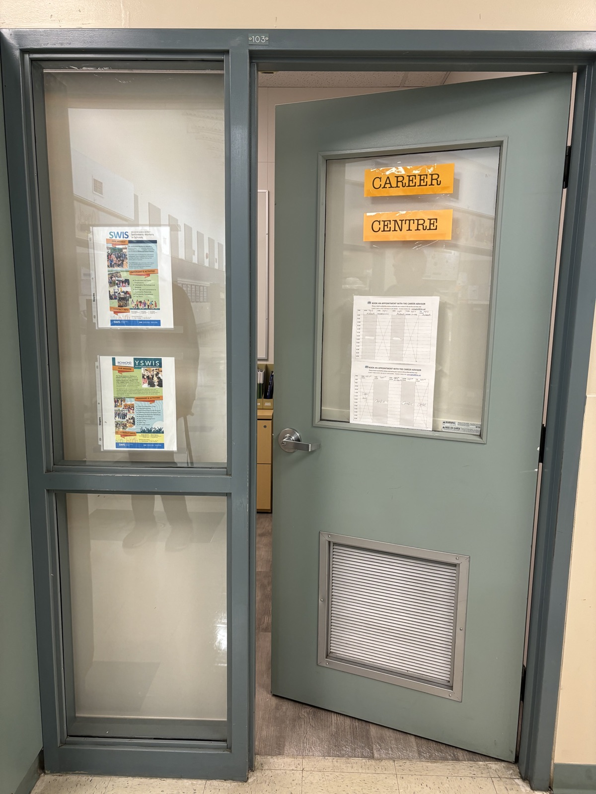

McRoberts Career Centre is an information hub for students who want to research and discover more about a wide range of post-secondary options, scholarship information, and career opportunities.
Career Centre Hours & Locations McRoberts Located: Room 103 by the Snack ShackDates: Wednesday, Thursday & Alternate FridaysHow: Click here to access the online booking system to set your appointment time
MS.TANG – CAREER INFORMATION ADVISOR
I’m happy to meet with you if you want to drop in and I’m free, or you can book an appointment by stopping by my office Room 103
Questions? Email me at:
etang@sd38.bc.ca
*Please tell me which school you are in, for your appointment.
The calendar below is IMPORTANT to you! You will find information sessions, scholarship deadlines, and upcoming events posted here. Check this calendar daily for important post-secondary information.
Career Centre Calendar
Post-Secondary Info
Applying to Post-Secondary Schools
Colleges
Colleges begin accepting applications on a specific date and cut off applicants once a program is full so the earlier you apply, (as soon as it opens and not before), the better. Applying early also secures a better registration time and timetable. College applications may open in September - check the school you are interested in to find out the exact date.
Universities
Universities begin accepting applications in October and consider each application based on a specific set of course/grade criteria, not necessarily how early you have applied. They stop accepting applications on a specific date.
Applying to Schools
Students either apply directly to the individual school or use a Provincial Post-secondary Application Service, this will be clearly indicated on the school's website. Students will need their 9-digit P.E.N. number and a credit card.
- Apply to B.C. Institutions: https://apply.educationplannerbc.ca/
- Apply to Alberta Institutions: https://www.applyalberta.ca/pub/
- Apply to Ontario Universities: http://www.ouac.on.ca/ouac-105/ (BC students must use this online application service to apply to ALL Ontario universities)
USA Schools
If you are seriously considering applying to the USA a majority of schools use the application process known as the Common Application. This process involves direct communication between the Common Application and your alpha-designated counsellor. If this applies to you, it is imperative you see your counsellor ASAP.
- Common Application: commonapp.org
- SAT Exam Registration: www.collegeboard.org
- McRoberts SAT registration number: #821311
International Institutions
- Vary, Check websites (early application dates may apply!)
- Make sure to prepare and plan well in advance.
- Write the Required Tests if Required
TOEFL
http://www.toeflgoanywhere.org or IELTS: http://www.ieltscanada.ca/
Websites and Resources
UniversitiesCanada: https://www.universitystudy.ca/
- Explore universities, search programs, find scholarships, plan for university
Canadian Colleges
: https://www.schoolfinder.com
Education Planner
: http://www.educationplannerbc.ca
- Provides information on B.C. colleges & university program availability, application dates, tuition costs, admission requirements, lengths and more.
College Board (USA Schools)
Student Transcripts Service
The StudentTranscripts Service (STS), is an online application for students to view their marks and transcripts, and send transcripts to post-secondary institutions and third parties.
To access the service, visit the Ministry of Education’s Order Transcripts and Certificates website at: www.StudentTranscripts.gov.bc.ca
Follow the instructions found there.
Before you access the StudentTranscripts Service as a current student, you will need:
- Your Personal Education Number (PEN)
- A valid email address
- Your date of birth
- Your legal first and last name
You must register for a Basic BCeID account first in order to access the StudentTranscripts Service.
Steps to Take to Apply to Post-Secondary Schools
Step 1: Complete an application well BEFORE the deadline
B.C. Institutions
: (Colleges & Universities). Students may apply either directly to a specific institution or use BC's online Post-Secondary Application Service: https://www.educationplannerbc.ca/
This service allows students to apply for admission to most public post-secondary institutions in British Columbia:
- Students will need their P.E.N. and a credit card.
- Fill in the common form once, then apply to any institution you choose
- Payment for each institution chosen is required.
- You can save and log back into your account at any time.
Alberta Institutions
(Colleges & Universities): https://www.applyalberta.ca/pub/
Ontario Instituions
- Universities: B.C. students must apply on-line through the Ontario Universities Application https://www.ouac.on.ca/ (Applications open late Sept.)
- Colleges: http://www.ontariocolleges.ca/apply
USA Institutions
- Education USA: Information on the application process: https://educationusa.state.gov/your-5-steps-us-study#top
- The Common Application: Application Service to over 600 American Institutions: https://www.commonapp.org/
UK Institutions
- UCAS: Application service for UK Universities: http://www.ucas.com/
- All Other Institutions: Varies – please check their website
Step 2: Send additional information
Broad Based Application (BBA), Supplemental Application, Resumes, Portfolio, Video Interviews etc. require extra information. Some schools may also require students to write additional entrance/assessment tests such as an LPI, TOEFL, or IELTS. They will have deadlines so check carefully!
Step 3: Submit grades
Some schools require students to self-report early in the year while others want students to wait for a specific date. Some schools may not provide a self-reporting option but require transcripts to be mailed at certain times throughout the year. In many cases, marks are sent directly to schools via STS. However, official transcripts can be ordered from the office for a small fee.
Students must check with each institution to find out how marks are to reported.
Grades can be submitted through:
- the Student Transcripts Service (STS),
- online via university portals or
- official transcripts can be sent directly to schools.
Grade 12 students that are taking a distance/distributed learning course - If a mark for the purpose of applying to a Post-Secondary Institution is required, there may be a separate deadline to have the course either 50 or 100% completed. Students must check with each institution's specific requirements and rules around online courses for the purpose of admission and required completion date.
Step 4: Complete the Student Transcript Service Selections (STS) form.
Website
www.StudentTranscripts.gov.bc.ca
- Ensure the STS form is completed by the specified dates.
- Transcripts are sent electronically to the majority of B.C. post-secondary institutions, University of Calgary, University of Alberta and Ontario Universities Application Centre.
- All other PSIs are mailed paper transcripts
- Final transcripts are sent by the Ministry at the end of July
- Results from August exams are not available in time for September admission to post-secondary institutions
Step 5: Check university Student Service Centre portals.
Grade 12 students who have applied to a university/college for entry in September are reminded to regularly check the institution's secured student service website/portal. These sites contain important details regarding admission offers, course pre-requisites, registration, deadline dates, contact information, grades, etc.
Check regularly to look for new messages to:
- Accept an offer
- Confirm registration date & time
Many sites require students to use the Identification Number that was noted on their confirmation letter along with a password.
Step 6: Offers – Accept or Decline
Conditional offers begin arriving after all necessary documents are received. They are time-sensitive and require students to pay a deposit. It is very important to check the deadline date regarding your 'Offer of Admission' and indicate your response on your student portal at the university/college before the deadline. Also, pay the registration deposit before this important deadline date. Most institutions require time to process your deposit/payment before your registration date.
Scholarships
Scholarships
It is students' responsibility to search out scholarships and apply for them. Scholarships are posted on the Career Centre Calendar and the ones posted there are also emailed to students. Some scholarships are nominated requiring students to apply to be nominated.
The process is discussed in this document. The McRoberts Scholarship application is posted on the McRoberts website (Students>Grad 2025) before spring break - this is for school-based scholarships that are presented at valedictory. All students are encouraged to apply.
There are many places to apply for scholarships so the following offers more information.
Helpful Hints
- Start researching scholarship options during grade 11 as the scholarship process begins early in your grade 12 year
- Begin volunteering regularly as many scholarships require a strong/consistent history of involvement as part of the eligibility
- Each award has unique criteria. You may have to complete an essay and/or provide school transcripts and references
- Consider a variety of smaller scholarships/awards as they may attract fewer applicants
- Have an updated resume and cover letter, that you can change for a specific scholarship
- Dedicate a specific time each week for your scholarship research
- Pay close attention to application deadline date/time, particularly if sending hardcopy documents
Find a Match
Some websites will match a student with a variety of awards in their database.
Register online for this option at
https://yconic.com/?redirect_from=studentawards
http://www.scholarshipscanada.com/
https://scholartree.ca/
More Sites to Search
https://studentlifenetwork.55rush.com/99scholarships
https://studentscholarships.org/#google_vignette
https://www.scholarshipscanada.com/
https://www.educanada.ca/scholarships-bourses/index.aspx?lang=eng
https://www.keytoscholarships.com/
Scholarships For International Students
One place to try:https://www.topuniversities.com/
Most universities will have entrance scholarships for international students, so this is a place to start.
Students can also register at the following websites and indicate you are an international student:
Student Scholarships
http://www.studentscholarships.org/
Student Awards
Scholarships Canada
http://www.scholarshipscanada.com
ScholarTree
Student Loans
https://studentaidbc.ca/sabc-home-page
Nominated Scholarships
(THESE ARE NOT THE VALEDICTORY SCHOLARSHIPS)
These scholarships require students to submit the online nominated scholarship request form by the posted deadline to be considered for nomination. The form can be filled in online and then either printed or emailed to the career advisor.Please Note: Students are responsible to check and meet the deadlines showing on the program website.
Scholarships noted below have an in-school McRoberts deadline for students to submit the form. This provides staff time to review each student request as well as allowing the nominated student time to gather requisite materials to make a formal submission to the scholarship. Check links for nomination and and submission deadlines.
Students interested in nominations are required to review the criteria of each scholarship carefully prior to submitting the online nominated scholarship request form. Details can be found on the link provided for each scholarship.
Submit the nomination form to your career advisor.
1. Schulich Leader Scholarship
Details: https://schulichleaders.com
FAQ: https://www.schulichleaders.com/faq
JAN 8/26 (Noon) In-School Nomination Deadline for Nomination Consideration
Jan 29/26 - Deadline for students to submit their completed application
2. CMolik
Foundation Scholarships
Details at: https://thecmolikfoundation.com/undergraduate/
JAN 8/26 (Noon) In-School Nomination Deadline for Nomination Consideration. Nomination letter by school principal required.
Feb 7/26 - The Cmolik Foundation Scholarship Application deadline.
3. BC Excellence Scholarship
JAN 8/26 (Noon) In-School Nomination Deadline for Nomination Consideration
FEB 15/26 2:59 PM - PST BC Excellence Scholarship deadline for nominated student to submit application.
Youth TRAIN in Trades
Youth TRAIN in Trades
Richmond School District offers a variety of Skilled Trades training to Richmond students. Check out their website to find out more!
https://careerprograms.sd38.bc.ca/our-programs/youth-train-trades
I Don't Know What I Want to Pursue After High School
I Don't Know What I want to Do After High School
Who Am I?
It’s important to learn about yourself. Why?
The better you know yourself, the easier it will be to find a career that matches your personality, skills & values.
Know Your Interests, Strengths & Skills
Why is it important to identify your interests?
To understand what you are (and are not) interested in, as you are likely to spend the most of your adult life at work!
Examples: music, sports, technology, reading….
Why is it important to identify your strengths and skills?
Knowing your strengths and skills helps you find a career utilizing what you are good at.
Examples: calm, high energy, creative, practical
What is the difference between a strength and a skill?
Strengths are positive aspects of your personality, and the way you think.
Skills are the ability to take these strengths and turn them into useful actions.
Example: perhaps, one of my strengths is creativity so I am skilled at coming up with original ideas!
Find Out Who You Are & Your Career Options
myBlueprint
MyBlueprint follows a comprehensive education and career planning process that meets the learning needs, interests and aspirations of all students. Who Am I Quizzes, Post-Secondary Institution Search Tool, Job Profiles & Employment Outlook, Resume, Cover Letters, Job search tools and more are part of this resource.
Education Planner
This site is set up to help students explore different programs at various post-secondary schools.
https://www.educationplannerbc.ca/
Discover Your Personality Type
http://www.humanmetrics.com/personality
Free personality test to discover your personality type and learning styles.
WorkBC Career Compass
https://careerdiscoveryquizzes.workbc.ca/
Quizzes help you identify your strengths, work preferences and interests and then see which careers might suit you best.
SKILLED TRADESBC
Take the TRADE Quiz.
The quick, fun quiz will help you explore the best skilled trades for you!
The Richmond School District offers students opportunities in Trades
https://careerprograms.sd38.bc.ca/
Labour Market Information
Of course, there is no point going to school doing all the work in a field where there will be no jobs. The best way to know what job fields will be strong in the future is to follow current trends. Remember, nothing is static – life is constantly changing. One place to search is the following:
Career Centre News
Important Dates/Deadlines
IMPORTANT DATES
SEPTEMBER
Unless you have already done so, register to write SAT/ACT test atwww.collegeboard.comif you plan to attend a University in the USA as soon as possible.
Scholarship Info
begins to arrive in the Career/Counselling Centre (Loran Awards, Canada Trust, etc.) and more are added throughout the year. Check our Career Centre Website (calendar), Career Centre Bulletin Boards.
Emily Car University -
Starts accepting applications for admission September 15, 2026 for fall 2027 start.
Douglas College -
Starts accepting applications in early September 2026 for fall 2027 start
Canadian University Event (CUE
) - Representatives from 55 Canadian colleges/universities will be presenting to Grade 10 to 12 students with information on their respective institutions. To find information, go to: http://cuebc.org/events/
Post-Secondary BC Fair
Sep 24th , 2026 @9:30-10:30 McRobert Secondary
Global Post-Secondary Event
Oct 5th ,2026 @ 4:00– 6:00pm
Steveston-London Secondary ,6600 Williams Road, Richmond, BC ,V7E 1K5
OCTOBER
Kwantlen Polytechnic University
starts accepting applications on October 1st, 2026 for admission Fall 2027.
Langara College
starts accepting applications on October 1st, 2026 for admission for Fall 2027.
BCIT
starts accepting applications on October 1st, 2026 for admission Fall 2027. Some programs vary. Your application must be accompanied by a transcript showing your Grade 11 final marks and list Grade 12 courses in progress. Depending on your program, a resume and a personal statement may also be required. We strongly encourage you to visit the BCIT website at www.bcit.ca for more information.
Gr 12 students may now apply to ALL Canadian Universities in October 2026. When applying, you must pay your application fee so that your application will be processed. Do not forget to print out your application confirmation. Continue working on applications making sure you submit all required documents.
Ontario University application: Apply Early!
If you are applying for admission to an Ontario university, it is recommended that BC students apply in October, even though the stated deadlines are mid January. Apply on-line at: www.ouac.on.ca/105 to the Ontario Universities' Application Centre (OUAC).
NOVEMBER
Complete the Student Transcript Service On-Line Form (STS) (you may continue to add new Post-secondary schools as you apply to more) www.StudentTranscripts.gov.bc.ca
DECEMBER
UBC
Application deadlinefor consideration for Major Entrance Scholarships is December 1st, 2026. In order to be considered you must apply for early Admission
JANUARY
Entrance Exams -
Register to write the TOEFL or IELTS (for English language learners), if you are required to do so. Contact Ms. Tang or individual post-secondary websites for requirements and exemptions.
- Check the schools you have applied to, to check their English Entrance requirements.
- Some institutions must have received the acceptable English proficiency exam results before a student is able to register in a first-year English university course.
- For TOEFL exam information see: https://www.ets.org/toefl
- For IELTS exam information see: https://www.ieltscanada.ca/
Deadline for
Emily Carr University
applications - January 15, 2027
UBC
applications: January 15, 2027
University of Victoria
and Simon Fraser University applications: January 31, 2027
APRIL
Make sure your TOEFL or IELTS results (if needed), have been sent to the institutions to which you have applied.
In-School Scholarship Program
application is available online. Complete one if you wish to be considered for the scholarships in several categories that will be awarded at the Valedictory ceremony.
University offers
start coming in.
MAY
Many universities require acceptance of offers by May 1st. Check your offers.
JUNE
Student Loan Applications Open - Apply for Government Student Loans. Check at: https://studentaidbc.ca/ or www.canlearn.ca
Graduation! Good luck
!
Need Further Assistance?
– To learn more about your post-secondary options and career exploration drop in or email for an appointment to see your Career Information Advisor, Ms. Tang in the Career Centre.
McRoberts
Monday/Wednesday/Alternate Fridays Email: etang@sd38.bc.ca
Post-secondary group presentations
will be offered based on demand. A sign-up sheet will be posted outside Ms. Tang’s office.
Volunteer Opportunities
Richmond Cares Richmond Gives (RCRG)
Are you looking for a volunteer opportunity? Visit Richmond Cares Richmond Gives (RCRG) for a list of available volunteer placements.
All Richmond students should contact this group to access student volunteer opportunities.
Online, you have the option to choose specific search topics to match your interests.
For more information about this organization, visit: https://www.rcrg.org/WhatWeDo/RCRGPrograms
Volunteer placements: https://www.rcrg.org/VolunteerNow
Contact: 604.279.7020
Location: #190 - 7000 Minoru Blvd. Richmond, BC
Note: More events information, Please check the main page calendar.
Get in Touch
MS.TANG – CAREER INFORMATION ADVISOR
Drop in or you can book an appointment by stopping by my office Room 103
To change or cancel your appointment please email me:
etang@sd38.bc.ca
*Please tell me which school you are in, for your appointment.